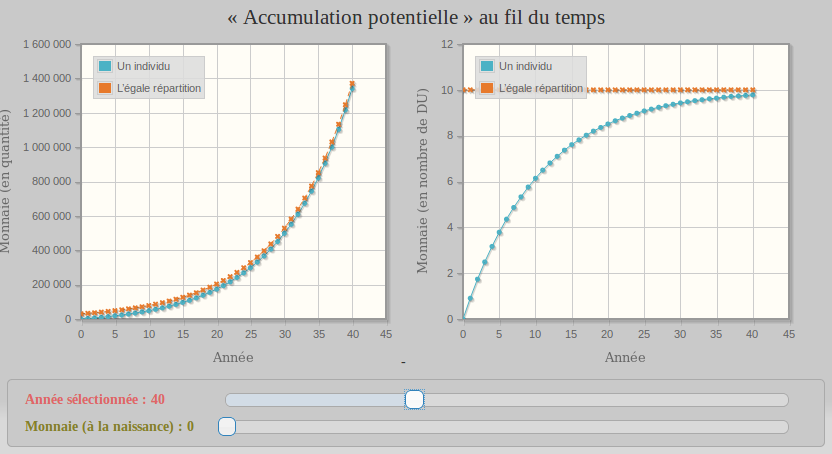
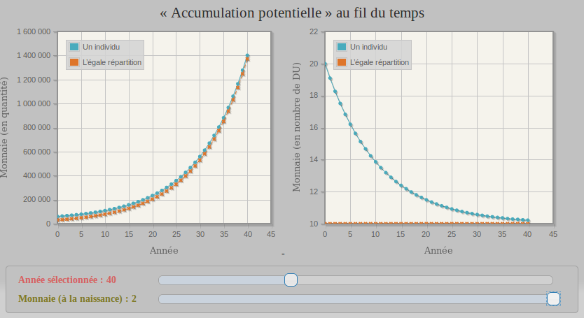

Utiliser la touche Espace ou les flèches pour parcourir la présentation (disponible en anglais ici)
Comment je suis tombé dans la monnaie libre ?
et la com Biocoop (Janvier 2008)

La consom’action ou consommation responsable est un néologisme qui exprime cette idée selon laquelle on peut « voter avec son caddie » en choisissant à qui l'on donne son argent, en choisissant de consommer de façon citoyenne et non plus seulement de manière consumériste.
Novembre 2008,
Je tombe sur le film de Paul Grignon
L'argent-dette
Ce qui réveille cette question d'enfance :
Ces pièces et billets existent,
à l'avantage de leur créateur,
et au détriment des autres.
Comment peut-on accepter une telle injustice ?
C'est une association de défense
des droits et libertés des citoyens sur Internet

Le filtrage du Net (illustré par la Quadrature du Net)
⇒ début de mon militantisme ! (Février 2009)
Vendredi 13 mai 2011,
Sur un forum de pirates, il est question d'un film intitulé Le Revenu de Base
Le revenu de base est un droit inaliénable, inconditionnel, cumulable avec d’autres revenus, distribué par une communauté politique à tous ses membres, de la naissance à la mort, sur base individuelle, sans contrôle des ressources ni exigence de contrepartie, dont le montant et le financement sont ajustés démocratiquement.
Définition du RdB donnée par
le Mouvement Français pour un Revenu de Base (MFRB)
Le RdB me semble alors une réponse à ces monnaies dont le mode de création est injuste
⇓
Le "financement" du RdB est un faux problème !
Il faut repenser la monnaie,
mais comment ?
Si le consom'acteur prétend « voter avec son caddie »
D'autres ont bien dû déjà réfléchir à ça !
4 Juillet 2011,
Il est question de la Théorie Relative de la Monnaie sur mon forum de pirates
Un certain Stéphane Laborde fournirait une approche monétaire du RdB
Mais la théorie semble ardue à comprendre
et l'auteur fantasque
Tant pis, laissons ça de coté...
Je tombe sur les travaux de l'autodidacte Silvio Gesell (1862 - 1930)
et sur sa monnaie fondante
La monnaie franche ou monnaie fondante désigne une monnaie qui, à l'image des biens de consommation (nourriture, vêtements, maison...), perd de sa valeur au fil du temps.
Extrait Ékopédia
Issu du site d'un collectionneur
exemple de mise en oeuvre d'une monnaie fondante
« Ce bon ne peut circuler que régulièrement affranchi »
Avec la monnaie fondante,
les unités monétaires ont la date limite d'utilisation que je cherchais mais...
cela semble lourd à l'usage, pas assez "élégant"
⇓
Juillet 2012, après un an d'hésitation,
je débute enfin l'étude de la TRM
La solution de Stéphane Laborde est bien plus élégante que celle de Silvio Gesell
Après des années à organiser leur nouvelle vie,
des naufragés décident de créér leur monnaie...
Il suffit :
Problèmes :
Solution :
De nouvelles unités monétaires doivent être créées régulièrement, tous les ans par exemple
Mais quel nombre d'unités ajouter chaque année ?
Si le même nombre est créé chaque année
(par exemple 10 unités), c'est injuste :
Année après année,
ce nombre apparaîtra de plus en plus petit
par rapport au total des unités déjà existantes

Comme un confetti posé sur un ballon qui gonfle
- La TRM pour les Enfants
Il faut plutôt créer chaque année la même proportion
(par exemple 10 %) par rapport au total des unités déjà existantes

Comme un confetti dessiné sur un ballon qui gonfle
- La TRM pour les Enfants
M/N est donc le nombre d'unités monétaires qu'aurait chaque naufragé si elles étaient réparties à parts égales
J'ai 10 unités en ma possession
Un nombre d'unités monétaire n'indique rien en soit.
Il faut pouvoir le comparer à un référentiel
qui fasse sens pour tout naufragé.
⇓
Il suffit de le comparer à la répartition moyenne M/N.
J'ai 10 unités alors que la moyenne est 10.
Je suis à la moyenne !
Chaque année, une même proportion de M/N est créée à destination de chaque naufragé
(dans un premier temps, disons 10 % par an)
-
Ce taux de croissance de 10 % par an s'appelle c,
ces nouvelles unités s'appellent le Dividende Universel
DU = c × M/N
Pour faciliter les études,
nous nous plaçons souvent dans ce cas particulier :
Les comptes n'évoluent pas d'une année sur l'autre,
ce qui ne veut pas dire qu'il n'y a eu aucun échange
- Mise en boîte du Revenu de Base
Rappel : un nombre d'unités n'indique rien en soit,
c'est la part relative à la moyenne M/N qui compte
Ce qui revient à comparer ce nombre
au dernier DU créé puisque par définition :
DU = c × M/N
-
On dit alors que l'on compte en DU
comme d'autres comptent en SMIC ou en RMI
Tel joueur de foot gagne 1000 SMIC par mois
Quand on compte en nombre de DU, que vaut M/N ?
Par définition : DU = c × M/N
⇒ la moyenne M/N est constante et vaut 1/c
(si c vaut 10 % par an, M/N vaut 10)
Quand on compte en nombre de DU, que vaut M ?
Par définition : DU = c × M/N
Donc M = N/c
Autrement dit :
Si la population N est stable,
la masse monétaire M est stable !
Si on trace l'évolution du compte d'un individu entrant dans le système, on constate qu'il tend vers la moyenne M/N

Compte ne possédant aucune unité monétaire à la naissance
- La TRM en couleur
Il en est de même si on trace l'évolution du compte d'un individu entrant dans le système avec plus que la moyenne M/N

Compte possédant deux fois la moyenne M/N à la naissance
- La TRM en couleur
Imaginons un individu possédant toutes les unités monétaires
Après émission des DU sur 40 ans,
la part de cet individu ne représentera plus que 2,5 %
Illustration du temps de dilution
- La TRM en couleur
Le revenu de base est un droit inaliénable, inconditionnel, cumulable avec d’autres revenus, distribué par une communauté politique à tous ses membres, de la naissance à la mort, sur base individuelle, sans contrôle des ressources ni exigence de contrepartie, dont le montant et le financement sont ajustés démocratiquement.
Définition du RdB donnée par
le Mouvement Français pour un Revenu de Base (MFRB)
Cette équivalence RdB / DU a été démontrée mathématiquement par Stéphane Laborde

Illustration de l'équivalence RdB / DU
- Mise en boîte du Revenu de Base
Le RdB ne remet pas en cause le code monétaire,
il est donc plus difficile de réfuter les mots :
"financement"
"cancer* de l'assistanat"
"spoliation de l'impôt"
Alors que ces mots sont des aberrations !
* Le cancer, c'est plutôt ces monnaies mal fichues qui pervertissent
jusqu'aux coeurs les plus beaux et poussent à tous les ravages
Un système monétaire asymétrique est instable
et voué à l'effondrement
Un tas de verrues sont ajoutées pour le faire durer
⇓
Le RdB est vu par beaucoup comme une verrue de plus
Le RdB ? Une roue de secours du capitalisme !
Des pistes existent
toutes basées sur la demi-espérance de vie humaine
Voyons-en une...
D'une part : un entrant dans le système doit avoir émis
sa part de monnaie au bout d'une demi-vie
Quantité de monnaie émise au bout d'une demi-vie
- La TRM en couleur
D'autre part : les unités monétaires existantes une demi-vie plus tôt doivent avoir été progressivement diluées dans celles qui ont été produites depuis
Illustration du temps de dilution
- La TRM en couleur
Les graphes précédents peuvent être synthétisés
dans un tableau pour quatre valeurs différentes de c
Récap pour différents taux - La TRM pour les Enfants
Suite à ces calculs et simulations,
un taux de 10 % par an
semble un bon compromis
Travaux de Stéphane Laborde (Ingénieur Télécom)
publiée en novembre 2010
où il théorise une monnaie "relativiste"
* finalement pourfendeur du système de réserves fractionnaires dans 100 % monnaie
** par ailleurs un promoteur du RdB avec son impôt négatif
La monnaie relativiste a d'autres noms :
- monnaie symétrique
- monnaie neutre
en référence à la Neutralité du net
- et surtout monnaie libre !
en référence au logiciel libre
Internet fournit des leviers bien plus puissants !
Duniter est un projet logiciel
de monnaie cryptographique
Constitué de logiciels libres,
il permet de créer des monnaies libres
Parmi les nombreux projets de crypto-monnaie à RdB, Duniter possède apriori (en août 2018) :
Certains sont classiques :
Utilisation d'une toile de confiance*
afin d'identifier les co-créateurs de la monnaie
Nécessaire pour s'assurer que chacun produit le même nombre de DUs par intervalle de temps
* Il sera question plus précisément de cette toile de confiance un peu plus tard
La toile de confiance permet aussi :
⇒ Des nœuds disposant de puissances de calcul très différentes ont les mêmes chances d’écrire des blocs !
Le bêtecon, ça bousille la planète :
Faux avec Duniter
Faux avec Duniter
Celui qui fait tourner un nœud bêtecon est appelé un mineur
Certains investissent dans plusieurs nœuds bêtecon pour maximiser leur chance de remporter les défis combinatoires

Une ferme de bêtecon - Mongolie intérieure - Chine
Avec Duniter, un nano-ordinateur suffit pour remporter régulièrement le défi combinatoire

Un Raspberry Pi
Le 8 mars 2017
Journée internationale des droits des femmes
La première monnaie libre est lancée
propulsée par Duniter
Nom de code : Ğ1
prononcée « La June »
- Dis, t'as de la thune ?
- Non, mais j'ai de la june !
Formule* utilisée pour le calcul du DU :
DU(t+1) = DU(t) + c² × (M/N)(t)
Emission journalisée**
* équivalente à la formule classique DU = c × M/N quand N est stable,
mais se comporte mieux quand forte variation
** Plus précisément, comme l'émission est journalisée :
Pour être membre,
il faut être certifié par d'autres membres
L'émission de certifications par une même personne suit certaines contraintes :
Définissons la distance entre membres...
Si Paul a certifié Jacques
⇒ Jacques est à une distance 1 de Paul ;
sinon si Paul a certifié quelqu'un
qui lui-même a certifié Jacques
⇒ Jacques est à une distance 2 de Paul ;
etc.
S'il n'existe pas de lien entre Paul et Jacques
⇒ la distance est infinie !
La distance maximale entre un nouvel entrant et les membres référents est de 5.
Néanmoins, cette règle ne s'applique pas strictement,
un pourcentage minimum de membres référents est à atteindre pour respecter la règle de distance : 80 %.
Mais c'est quoi un membre référent ?
Un membre référent
a reçu et émis au moins Y certifications
Y évolue au rythme de la racine cinquième de N,
N étant le nombre total de membres
Par exemple :
pour N=1 000, Y vaut 4
pour N=10 000, Y vaut 7
pour N=100 000, Y vaut 10
pour N=1 000 000, Y vaut 16
Pour avoir une toile qui puisse grandir sans difficulté,
tout en dissuadant les tricheurs
Car à quoi bon avoir une base de données comme Duniter
s'il n'y a pas de logiciels clients qui l'exploitent !
Faisons un petit tour de l'existant...
Premier client développé pour Duniter,
il permet de :
Client lourd réalisé avec PyQt5 et Python 3
Autre client pour Duniter,
le plus avancé au niveau des fonctionnalités utilisateur,
il fournit par exemple :
Client web réalisé avec ionic.js
Client en ligne de commande,
idéal pour programmer des versements récurrents.
Exemples :
Client réalisé avec Python 3
Place de marché (réalisée avec ionic.js)
Service de dons pour financer les calculateurs de blocs
Réalisé sous la forme d'un plugin de noeud Duniter
Outil graphique pour explorer la toile de confiance
(exploite les données de profil Césium )

Des évènements partout en France
Apéros, jeu Ğéconomicus, Ğmarché...
Retrouvez-les sur le net
La monnaie libre
se construit par tous
et pour tous
{kind=link}
{kind=link}
{kind=link}
{kind=link}
{kind=link}
{kind=link}
{kind=link}
{kind=link}
{kind=link}